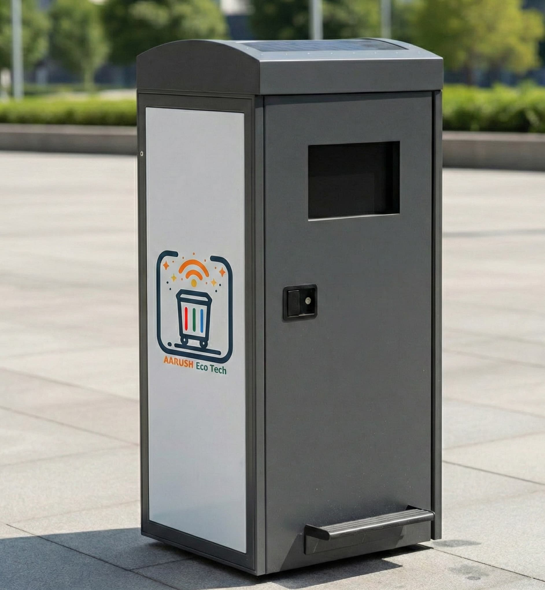
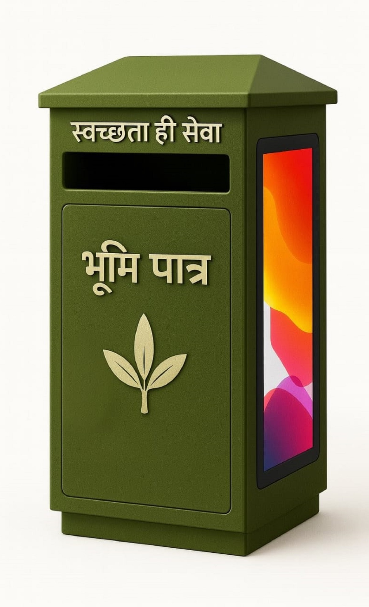

Smart bins that sense. A platform that alerts, analyzes, and closes the circular economy loop — turning every collection into audit-ready ESG data, automatically.
Installation to insights — the complete journey
We install and activate smart bins at your site. No civil work. No capex.
Sensors track fill levels and send real-time data every 15 minutes.
Alerts drive collection scheduling, cutting wasted trips by up to 40%.
Access structured waste data to support ESG, BRSR, and compliance reporting.
Each module eliminates a failure point. Not a feature — a fix.
Eliminates power grid dependency entirely. 30-day autonomy.
Eliminates manual inspection rounds. Always watching.
Eliminates overflow risk. Auto-locks when threshold crossed.
Eliminates maintenance surprises. IP65, steel, ground-anchored.


Full technical specifications shared on request.
Hover the cards to reveal what's inside
Completely off-grid operation
Real-time monitoring & alerts
Always online, everywhere
Four steps from sensor trigger to driver alert. No human in the loop. No delay.
Ultrasonic fill sensor reads 80%+ threshold. Triggers encrypted data packet.
MQTT over TLS. Packet reaches secure cloud. Bin ID, location, fill level logged instantly.
Platform re-optimises the nearest vehicle's route, inserting this bin with priority.
Push notification with turn-by-turn. Worker is en route before the bin can overflow.
Result: overflow prevented. The event is logged, timestamped, and added to your ESG report automatically. No spreadsheet. No manual entry. No guesswork.
The complete data journey — hardware to ESG output
Not just monitoring — the command centre for your waste operations. Manage collections, track fill levels, access ESG data, and get alerts before problems happen.
* Simulated data for demonstration. Actual platform interface may differ.
Cloud-based system that powers everything
Live status of every bin with color-coded fill levels
Automated notifications via SMS, email & push when bins need attention
Trend analysis and automated waste data reports — no manual logging
Optimized routes with real-time traffic & live bin updates
Collection checklist, photo documentation, issue reporting
Works without internet, syncs when connection returns
Complete OpenAPI spec with webhooks & real-time data access
Pre-built connectors for SAP, Oracle, Dynamics, ServiceNow
Direct export to Envizi, Workiva, Measurabl, custom dashboards
No other waste management system in India generates structured ESG data at the individual bin level. Aarush captures every collection event, fill level, and segregation entry — automatically. 15 live ESG KPIs. BRSR-compatible exports. Reports your board can trust. Zero spreadsheets. Your ESG team gets the data. We do the work.
GHG avoided (estimated), methane reduction, solar self-sufficiency, scope 3 waste emissions data
Landfill diversion, recyclable capture, waste composition, collection efficiency, EPR enablement
Cost savings, urban land efficiency, worker safety index, system uptime, public hygiene score
Why this matters: It turns cleanliness from an assumption into trackable, reportable data your board can act on.
Explore ESG Data Tracking →Every data point is signed, timestamped, and mapped to BRSR categories — automatically
Ultrasonic array fires. Topographic fill profile captured with ±1cm precision. Timestamp generated at edge.
PRECISION EVENT LOGIndigenous module signs the packet. Device ID, GPS, fill %, battery, signal strength — encrypted via MQTT/TLS.
SOVEREIGN MODULEData mapped to BRSR Category 3. GHG avoidance estimated. KPIs computed. 15 live metrics updated in real time.
BRSR-MAPPEDAudit-ready record pushed to enterprise dashboard. ESG report generated. No manual entry. No spreadsheet.
AUDIT-READYWhere the bin stops being a dead end and starts being an asset
Aarush bins already capture and segregate secondary materials — dry recyclables, organics, and more. RE-Source, India's first platform of its kind, takes this further: connecting verified secondary material streams to buyers, recyclers, and circular economy operators through a structured trading and recovery network.
No other smart bin ecosystem in India includes a resource recovery layer. Organisations that deploy Aarush infrastructure now get early access to RE-Source when it launches. The bin that collects waste becomes the entry point to a circular economy — automatically.
Learn about RE-Source →No simulations. No projections. These numbers come from live deployments.
Drag the slider to compare traditional vs. smart waste management
Every other smart waste company asks you to buy bins, fund installation, manage hardware, and budget for maintenance. Aarush inverts this entirely. We invest in the infrastructure. You get the technology, the ESG data, and a cleaner facility — from day one.
Project your environmental and financial value. Adjust inputs to see live outcome estimates.
* Projections based on pilot data averages. Actual results vary by site conditions.
The technological delta between a commodity sensor and infrastructure-grade waste intelligence.
| Capability | ❌ Generic IoT Bins | ✅ Aarush Platform | |||||||||||||||||||||||||||
|---|---|---|---|---|---|---|---|---|---|---|---|---|---|---|---|---|---|---|---|---|---|---|---|---|---|---|---|---|---|
| Fill Detection | ✗ Single-point threshold trigger | ✓ Topographic ultrasonic array ±1cm
| Connectivity |
✗ Wi-Fi only, no fallback |
✓ Sovereign IoT Hub · 4G→3G→2G fallback |
Data Integrity |
✗ Simple alerts, no audit trail |
✓ Edge-timestamped, audit-ready ledger INDIA FIRST |
ESG Output |
✗ None — manual reporting only |
✓ 15 live KPIs · BRSR-mapped · Auto-generated INDIA FIRST |
Power |
✗ Grid-dependent, recurring cost |
✓ 100% solar · 30–45 day battery backup |
Circular Economy |
✗ Waste collected, chain ends |
✓ RE-Source circular recovery network INDIA FIRST |
Capital Required |
✗ Full hardware capex upfront |
✓ ₹0 Zero-CapEx deployment model GLOBAL FIRST |
OTA Updates |
✗ Manual / physical access needed |
✓ Encrypted OTA · Auto-rollback on failure |
Worker App |
✗ No field-force integration |
✓ Turn-by-turn nav · Offline mode · Photo proof |
Enterprise API |
✗ Vendor-locked, no integration |
✓ REST API · SAP/Oracle/Dynamics connectors |
|
Common questions from facility managers and procurement teams
The iBin stores data locally on-device and automatically syncs when connectivity is restored. The system supports multi-carrier SIM fallback (4G → 3G → 2G). Critical alerts are queued and delivered once the connection is re-established. No data is lost during offline periods.
Firmware updates are pushed over-the-air (OTA) via secure encrypted channels. Updates are scheduled during low-usage windows and rolled back automatically if the device fails to boot post-update. No physical access is required for routine firmware updates.
Warranty and service terms vary by deployment model and are specified in the sales or service agreement. Contact us for details applicable to your deployment.
Bin fill-level and collection events are automatically captured by the IoT system. Segregation data is entered daily by operations teams. This data is aggregated in the dashboard and available as structured reports. We provide the underlying waste data — your ESG team or consultant incorporates it into your BRSR or sustainability reports. We do not certify ESG compliance.
Under the Zero-CapEx model, there is no upfront investment required from the facility owner. Aarush handles procurement, installation, and ongoing management. Terms and conditions of this arrangement are discussed during the partnership conversation. Contact us to explore feasibility for your facility.
Our technology stack was designed from day one to create simultaneous value at every layer—from the physical bin to the cloud dashboard. Whether you govern a city, fund sustainability, buy media, or build a portfolio—the platform delivers.
Swachh Bharat 2.0 Realized
Eliminate the "Triad of Failure" (Overflow, Poor Design, Non-availability). Deploy infrastructure-grade stainless steel bins that report their own fill levels 24/7. Achieve immediate, visible cleanliness across cities, railways, and airports.
Audit-Ready Environmental Data
Stop relying on estimated spreadsheets. Our bins automatically calculate 15 live ESG KPIs—from carbon diversion and methane reduction to land efficiency. Fund a deployment through CSR and get continuous, verifiable impact reports.
Premium Green DOOH Placements
Place your clients' brands on premium, high-tech infrastructure in India's highest-footfall zones (Malls, Airports, Tech Parks). Align brands with sustainability while achieving massive urban reach.
A ₹14,500+ Cr Untapped Monopoly
We are establishing the category of 'Active Waste Infrastructure' in India. Backed by patented tech, we offer a highly scalable business model with proven unit economics and deeply entrenched enterprise lock-in.